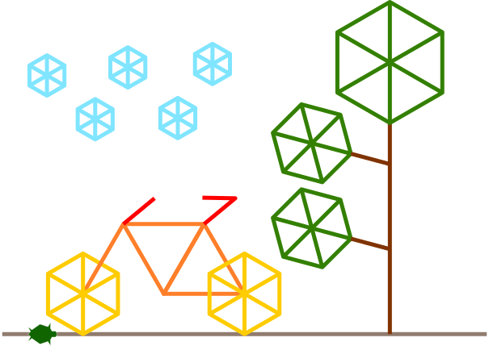

Turtle — это встроенный модуль Python, который позволяет создавать графические изображения с помощью "черепашки", управляемой при помощи команд.
Чтобы использовать Turtle в своей программе, необходимо импортировать модуль turtle при помощи команды
import:
import turtle
import мы загружаем модуль в нашу программу. После этого
мы можем использовать функции и классы модуля в нашем коде.Создание черепашки:
t = turtle.Turtle()
t, который мы используем для рисования.Объекты:
t — это объект, который имеет свои свойства (например, цвет
пера) и методы (например, forward).t.forward(100) — это метод объекта t "черепашка".turtle.Turtle() — это специальный метод, который создает объект.
В целом, код для создания черепашки и начала работы с ней выглядит так:
# импорт модуля
import turtle
# создание черепашки
t = turtle.Turtle()
# вызов методов черепашки
t.forward(100)
t.left(90)
Движение и рисование линий:
t.forward(100) # черепашка двигается вперед на 100 пикселей
t.left(90) # поворот влево на 90 градусов
t.right(45) # поворот вправо на 45 градусов
for _ in range(4):
t.forward(100)
t.left(90)
for для повторения одинаковых действий._. Данное имя показывает, что значение переменной не
используется, но оно необходимо для цикла.Общий случай для замкнутого многоугольника с n сторонами:
sides = 6 # количество сторон
angle = 360 / sides # угол поворота
for _ in range(sides):
t.forward(100)
t.left(angle)
Пример спирали:
colors = ['red', 'green', 'blue', 'orange', 'purple']
for i in range(50):
t.pencolor(colors[i % len(colors)])
t.forward(10 + i * 2)
t.left(45)
Черепашка может перемещаться в определенные координаты:
t.goto(50, 50) # перемещается в точку (50, 50) по координатной плоскости
Система координат:
t.penup() # перестает рисовать
t.pendown() # снова начинает рисовать
t.pencolor('blue') # устанавливает цвет пера
t.width(5) # устанавливает толщину линии
help(t) # общая информация о методах черепашки
help(t.forward) # справка по методу forward
SIDE_LENGTH = 100 # константа для длины стороны
SIDE_LENGTH = 100 # длина стороны многоугольника
NUM_SIDES = 6 # количество сторон многоугольника
ANGLE = 360 / NUM_SIDES # угол поворота
for _ in range(NUM_SIDES):
t.forward(SIDE_LENGTH)
t.left(ANGLE)
range: Создает последовательность чисел:
for i in range(5): # числа от 0 до 4
print(i)
len: Возвращает длину списка или строки:
colors = ['red', 'green', 'blue']
print(len(colors)) # вывод: 3
Другие идеи рисунков можно найти в интернет: пример.
Подсказка:
circle поможет нарисовать круг или дугуfillcolorДополнительный материал: Введение в Turtle